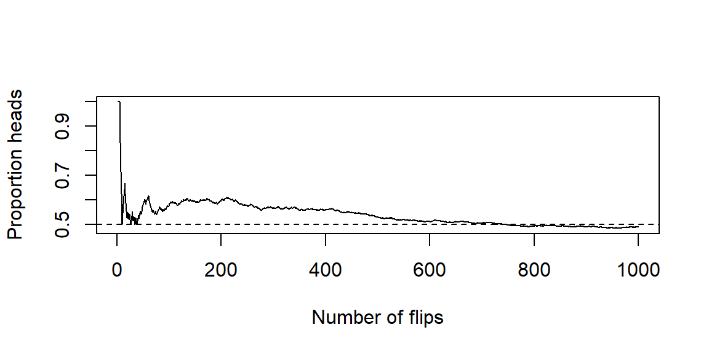

1 Introduction to Statistics
1.1 What is Statistics?
“The non-scientist in the street probably has a clearer notion of physics, chemistry and biology than of statistics, regarding statisticians as numerical philatelists, mere collector of numbers.” - Stephen Senn, Dicing with Death: Chance, Risk and Health
Suppose someone shows you a coin. It is a typical coin like the one you see below.


Also suppose this individual claims that this coin will land on heads 90% of the time when it is flipped.
This claim seems unbelievable. A typical coin lands on heads bout 50% of time if the coin is fair.
What would you say to this individual who is making this claim?
You would likely say Show me some evidence.
So this individual flips the coin and it lands on heads.
This result is not surprising if the coin is fair or if the claim of 90% is true. If the coin landed on tails then you would likely have some doubt of the claim. Since we have heads, we really don’t have enough information to confirm the 90% claim. So we ask for the coin to be flipped again.
Suppose it flipped to a heads again. So now we have two heads in two flips of this coin.
Is this enough evidence to convince you of the 90% claim?
To answer that question, you should consider the chances of getting this result under both scenarios:
If the coin if fair, the chances of getting two heads in two flips is 25%.
If the 90% claim is true, the chances of getting two heads in two flips is 81%1.
Although the 90% claim has the higher chance of getting two heads in two flips, we cannot rule out the fair coin scenario. A chance of 25% is not high, but it is not impossible. If fact, we would not consider a result with chances of 25% to be rare or unusual if that result happens.
We need more information. Suppose the coin if flipped 20 times. Here are the results:
In these 20 flips, we have 11 heads and 9 tails.
With this information, we do you think about the 90% claim? Let’s compare what we have seen in this result compared to what we expected to see under the two scenarios.
If the coin if fair, we expect to see around 10 heads. We saw 11 heads which is close.
If the 90% claim is true, we expect to see around 18 heads. We saw 11 heads which is far off. In fact, the chances of seeing at most 11 heads under this scenario is less than 0.01%.
These results appear to show the 90% claim is not true. But let’s look at another set of 20 flips.
In this set of 20 flips, we have 17 heads and 3 tails including 14 heads in a row.
Without even considering the chances under the two scenarios, you are likely more convinced of the 90% claim given these results. Let’s look at the chances anyways:
If the coin if fair, the chances of getting at least 17 heads out of 20 flips is around 0.13%.
If the 90% claim is true, the chances of getting at least 17 heads out of 20 flips is around 87%.
The evidence is clearly in favor of the 90% claim.
Here’s the catch: that second set of 20 flips was not made up. They are actually the results of the coin toss of Super Bowls 31-50. If we let heads represent the NFC team winning the coin toss and tails represent the AFC team winning the toss, then the second set of flips would be the results.
 AFC
AFC
 NFC
NFC
 NFC
NFC
 NFC
NFC
 NFC
NFC
NFC
 NFC
NFC
 NFC
NFC
 NFC
NFC
 NFC
NFC
 NFC
NFC
NFC
 NFC
NFC
 NFC
NFC
NFC
AFC
 AFC
AFC
NFC
NFC
NFC
Does this seem impossible? Do we think the Super Bowl coin was somehow weighted to give the NFC team an advantage? Certainly not. In fact, each Super Bowl uses a different commemorative coin for the coin toss.
What this illustrates is rare things happen. Even when a process is completely fair and governed only by chance, long streaks and surprising outcomes can still occur. That means that we cannot judge claims based on a few eye-catching outcomes or coincidences alone. Instead, we must step back and ask deeper questions:
What outcomes would we expect to see if a claim were true?
What outcomes would we expect to see if the claim were not true?
Are the results we observed consistent with ordinary chance variation, or are they so unusual that they suggest something else is going on?
In other words, real-world questions rarely come with certainty. Instead, they come with uncertainty, variability, chance, and incomplete information. We cannot rely on intuition alone. We need a disciplined way to use data to evaluate claims, measure evidence, and make informed decisions even when we cannot know the truth with absolute certainty.
That disciplined way of thinking is what statistics is about.
What is “statistics,” exactly?
Statistics is the science of collecting, organizing, analyzing, and interpreting data to make decisions or draw conclusions. It’s not just about numbers-it’s about what those numbers tell us.
If Statistics concerns data, then we should define “data.” First, note that “data” is a plural word. “Datum” is singular, although it is common to hear someone refer to “data” in the singular. A “datum” is a piece of information or fact. So “data” is a collection of facts or information we collect. That could mean
the amount of profit a company makes,
the growth of plants under some conditions,
or how many people voted in an election.
A helpful way to organize the subject of Statistics is to distinguish two complementary activities:
Descriptive statistics help us summarize and visualize what we observed-think graphs, tables, and numerical summaries. The goal is clarity.
Inferential statistics help us generalize from a sample to a broader group (or process) and quantify our uncertainty about that generalization. The goal is justified conclusions.
Even in a short conversation about data, you’ll hear a few recurring ideas:
A population is the full set of people, items, or occasions we care about (all Baylor first-years this fall, all batteries produced this week).
A sample is the subset we actually observe.
A parameter is a (usually unknown) number that describes a population (the true average battery life, for example).
A statistic is a number we compute from a sample (the sample’s average battery life) that we use to learn about the parameter.
We’ll study these terms in more detail soon; for now, hold on to the big idea: we summarize what we see (description) and we reason beyond what we see (inference).
Why decisions need both description and inference
Suppose a clinic tests a new flu-prevention program among 200 volunteer patients. A month later, 18% of the “usual care” group got the flu, compared to 12% of the “new program” group.
Descriptively, the new program looks better. Inferentially, we ask: could this gap be due to chance? If we ran the study again with different patients, might the difference shrink or flip? Statistics gives us a way to quantify that uncertainty and decide what to do next.
A similar story plays out in business A/B tests, manufacturing quality checks, and sports analytics. The descriptive picture tells us what happened in the data; inference tells us how strongly that evidence supports a decision.
How we’ll work in this course
Our general workflow:
Start with a clear question and name the observational units (what a single case is) and variables (what we record about each case).
Decide how the data were or will be collected (survey, experiment, database pull).
Use descriptive statistics and graphics to get oriented.
Build an inferential argument when you need to generalize or compare.
Communicate a conclusion in context-what it means, what it doesn’t, and what to do next.
Recap
| Keyword | Definition |
|---|---|
| Statistics | The discipline of learning from data to describe patterns and make decisions under uncertainty. |
| Data | Recorded information about cases (people/items/occasions) used as evidence for questions of interest. |
| Descriptive statistics | Methods for summarizing and visualizing what was observed (tables, graphs, numerical summaries). |
| Inferential statistics | Methods for generalizing from a sample to a population and quantifying uncertainty. |
Check your understanding
Problems
- In your own words, how is describing data different from inferring from data? Give a short example for each.
- A streaming service tests two home-page designs on 5,000 visitors each. Version B produces a 0.6 percentage-point higher click-through rate than Version A. What questions would you ask before recommending the company switch to Version B?
Solutions
- Description vs. inference. Description summarizes what happened in the observed data (e.g., “The median wait time yesterday was 11 minutes.”). Inference uses the sample to say something about a broader group or process, with uncertainty (e.g., “We estimate the typical wait time for all days like yesterday is 11 minutes, with margin of error ±2 minutes.”).
- How were visitors assigned to versions (randomly)? Were there differences in traffic sources or device types? Is the effect stable over time? What outcome do we ultimately care about (sign-ups, retention), and does the change affect it?
1.2 Populations and Samples
“To understand God’s thoughts, we must study statistics, for these are the measures of his purpose.” - Florence Nightingale
When you start any statistical investigation, the first two things to name are the population and the sample. The population is the full group or process you want to understand; the sample is the smaller set of cases you actually observe. Most of the time we can’t measure everyone or everything, so we sample wisely and then use statistics to bridge from the sample back to the population.
Defining the population
At the heart of every statistical study is a population-the full set of individuals, objects, or events about which we want to learn. Sometimes this population is very concrete and well defined, such as “all tires produced by Line A during the third shift this week.” Other times it is more abstract or conceptual, such as “all patients with this condition who would receive this treatment under similar circumstances.” In both cases, the population exists independently of the data you happen to collect.
Two important refinements help clarify what we really mean by “the population” in practice:
The target population is the group you ultimately care about and want to draw conclusions about. This is the population referenced in your research question or claim. For example, a university might care about all incoming first-year students, or a manufacturer might care about all tires it produces under normal operating conditions.
The accessible population is the portion of the target population that you can realistically reach or observe. This group is often represented by a sampling frame-a list, database, or mechanism that allows you to identify and select individuals for the study.
In an ideal world, the accessible population would perfectly match the target population. In reality, they often differ. Practical constraints-time, cost, geography, incomplete records, or nonresponse-mean that some members of the target population are harder (or impossible) to include.
Clarity about this distinction matters. Suppose your target population is “all Baylor first-year students this fall.” If your sampling frame consists of “students who attend welcome week,” you may systematically exclude commuters, students with work or family obligations, or those who arrive late to campus. If these excluded students differ in meaningful ways-academically, socially, or financially-then your sample may not represent the target population well. This mismatch introduces bias, meaning your results may consistently overestimate or underestimate the quantity you are trying to measure.
Being explicit about the target population, the accessible population, and the sampling frame forces you to confront these limitations up front. It also helps you interpret results honestly: conclusions drawn from the accessible population should not automatically be generalized beyond it without careful justification. In statistics, knowing who your data represent is just as important as knowing what the data say.
What counts as a sample?
A sample is the subset of the population from which data are actually collected. It consists of the specific individuals, objects, or observations you measure in your study. While the population defines what you care about, the sample defines what you observe. Everything that follows in a statistical analysis-summary statistics, graphs, models, and conclusions-is based on the sample.
We will study how to select samples carefully in Chapter 2. For now, the key idea is what a good sample accomplishes. A good sample represents the population well enough that quantities computed from the sample-such as means, proportions, or regression coefficients-provide useful information about the corresponding population quantities, called parameters. When this happens, the sample serves as a stand-in for the population.
Importantly, a sample does not need to “look like” the population in every detail. Rather, it needs to capture the relevant sources of variability in the population without systematically favoring certain groups or outcomes over others. Poor samples can lead to misleading conclusions, not because the calculations are wrong, but because the data themselves fail to reflect the population of interest.
A special case is a census, in which you attempt to measure every unit in the population. In principle, a census eliminates sampling variability, since there is no subset involved. In practice, however, censuses are rare. They are often expensive, time-consuming, and logistically complex. Even large-scale censuses can suffer from missing data, nonresponse, or measurement error, which means they are not immune to bias.
For these reasons, sampling is the workhorse of statistics. Carefully designed samples allow us to learn about large or even infinite populations using a manageable amount of data. The central challenge of statistical inference is to quantify how much uncertainty remains when we use a sample to speak about a population-and that challenge begins with understanding exactly what our sample represents.
Parameters and statistics
A parameter is a numerical summary that describes a characteristic of the entire population. Examples include the true mean income of all households in a city, the proportion of all voters who support a particular candidate, or the standard deviation of tire lifetimes produced by a factory. Parameters are fixed values-they do not change-but they are usually unknown, because measuring an entire population is rarely feasible.
A statistic, by contrast, is a numerical summary computed from a sample. Sample means, sample proportions, and sample standard deviations are all statistics. Unlike parameters, statistics depend on which individuals happen to be included in the sample, and therefore they can change from sample to sample. In practice, statistics are the quantities we can actually calculate, and we use them as estimates of the corresponding population parameters.
This distinction is central to statistical thinking. When you report a sample mean, you are not claiming it is the population mean. Instead, you are using it as your best guess, based on the available data. Different samples from the same population would produce different statistics, even if the sampling method were perfectly fair.
That inevitable variation from sample to sample is called sampling error. Sampling error does not mean that a mistake was made or that the data were collected incorrectly. Rather, it reflects the natural randomness involved in observing only a subset of the population. Even well-designed samples are subject to sampling error.
A major goal of statistics is to measure and communicate this uncertainty. Later chapters will introduce tools such as margins of error, confidence intervals, and hypothesis tests, which allow us to quantify how close a statistic is likely to be to the true parameter. These tools do not eliminate uncertainty, but they help us reason carefully about what our data can-and cannot-tell us about the population.
Why sampling works (and when it doesn’t)
Sampling works when your sample is representative of the population and your measurement is trustworthy. It struggles when parts of the population are systematically excluded (coverage problems), when participation differs by outcome (nonresponse), or when the way you select units is related to the outcome (selection effects). We’ll study these threats-and how to reduce them-next chapter.
A quick illustration: samples differ, the goal doesn’t
The illustration below shows a fundamental idea in statistics: different samples from the same population give different answers, but they are all trying to estimate the same underlying truth.
In this simulation, we imagine a population where the true mean is known to be 10 and the standard deviation is 2. From this population, we repeatedly take random samples and compute the sample mean each time. We do this for several different sample sizes, and then look at how the sample means behave.
Each histogram shows the distribution of sample means from 1,000 different samples of the same size. The dashed vertical line marks the true population mean of 10.
When the sample size is small (for example, (n = 20)), the sample means vary noticeably from one sample to another. Some are below 10, some are above, and a few are fairly far away. This variability is not a flaw in the method-it is the unavoidable consequence of working with limited data.
As the sample size increases (to (n = 50) and then (n = 200)), two things become apparent:
- The sample means continue to center around the true mean of 10.
- The spread of the sample means shrinks. Larger samples produce more stable, less “wiggly” estimates.
This shrinking spread reflects a reduction in sampling error. With more data, random fluctuations tend to cancel out, and the statistic becomes a more precise estimate of the parameter. Importantly, the target never changes: all of these samples-large or small-are aiming to learn about the same population mean.
This example captures the intuition behind statistical inference. We accept that individual samples differ, but we rely on probability and repeated-sampling logic to understand how much they differ and how close our estimates are likely to be to the truth. Later chapters will formalize this intuition using sampling distributions, standard errors, and confidence intervals, but the core idea is already visible here: uncertainty decreases with sample size, even when the goal stays the same.
Recap
| Keyword | Definition |
|---|---|
| Population | The full group or process you want to understand. |
| Target population | The group you truly care about answering a question for. |
| Accessible population | The portion of the target population you can practically reach. |
| Sampling frame | The list or mechanism from which the sample is drawn. |
| Sample | The subset of units you actually observe and measure. |
| Census | An attempt to measure every unit in the population. |
| Parameter | A numerical characteristic of a population (e.g., \(\mu, p\)). |
| Statistic | A numerical summary from a sample (e.g., \(\bar{x}, \hat{p}\)) used to estimate a parameter. |
| Sampling error | Natural variation in a statistic from sample to sample. |
| Bias | Systematic deviation caused by design, coverage, or selection issues. |
Check your understanding
Problems
A battery plant tests 80 batteries from today’s production line and finds an average life of 7.8 hours. Identify the population, sample, parameter, and statistic.
Your target is “all Baylor first-year students this fall.” You gather data from an email list of students who signed up for an early-interest program. What is the sampling frame? Name a potential source of bias.
A marketing team uses comments on their Instagram post to judge product satisfaction among all customers. Explain why this may not represent the population.
Solutions
Population: all batteries produced today. Sample: the 80 tested batteries. Parameter: the true mean life of all batteries produced today. Statistic: the sample mean of 7.8 hours.
Sampling frame: students on the early-interest email list. Potential bias: students who didn’t sign up (e.g., commuters, late enrollees) may be under-represented, creating coverage/selection bias.
Instagram commenters are a self-selected subset; satisfied or dissatisfied users may be more likely to comment, and customers not on Instagram are excluded-both threaten representativeness.
1.3 Variables and Types of Data
“Not everything that can be counted counts, and not everything that counts can be counted.” - Albert Einstein
Every data table is built from two essential ingredients: cases and variables. The cases form the rows of the table and represent the individual observational units-people, objects, events, or time points-on which data are collected. The variables form the columns and describe characteristics recorded for each case. Thinking clearly about both is crucial: a dataset only makes sense when you know what each row represents and what information each column contains.
What is a variable?
A variable is any characteristic that can take different values across cases. For example, resting heart rate may vary from person to person, major differs across students, state of residence varies geographically, and did the patient improve? can differ from one patient to the next. If a characteristic does not vary-if it takes the same value for every case-it does not function as a variable and typically provides no information for analysis.
Variables always live in context. For any dataset, we should be able to answer two basic questions:
- What does one row represent? This is the observational unit (for example, one student, one hospital visit, or one manufactured item).
- What does each column represent, and how was it measured or recorded? For numerical variables, this includes the unit of measurement (beats per minute, dollars, hours, miles, etc.).
Context matters because the same-looking numbers can mean very different things depending on how they were collected. A column of values like 72, 68, 75 might represent heart rates, exam scores, or daily temperatures, and each interpretation leads to different conclusions and appropriate analyses. Even non-numeric variables require clear definitions: knowing whether “major” refers to a declared major at enrollment or at graduation can change how the data should be interpreted.
Being explicit about variables and their meaning lays the groundwork for everything that follows. The choice of summary statistics, graphs, and statistical models depends not just on the values in a column, but on what kind of variable it is and what it represents.
The two big families
Most variables encountered in practice fall into two broad families. Different textbooks use slightly different names-qualitative vs. quantitative, categorical vs. numerical-but the underlying ideas are the same. The key question is whether the values represent group membership or measured quantities.
Categorical variables
A categorical variable assigns each case to a group, category, or label. The values describe what kind of thing each case is, not how much of something it has. Because the categories are labels, performing arithmetic operations on them does not make sense-even if the categories are coded using numbers behind the scenes.
For example, coding blood types as 1, 2, 3, and 4 does not imply that type 4 is “twice” type 2 or that averaging blood types is meaningful. The numbers are merely labels.
Categorical variables commonly appear in three forms:
Nominal variables consist of categories with no natural ordering. One category is not inherently “higher” or “lower” than another. Examples include blood type, home state, eye color, device brand, or political party. For nominal variables, we typically summarize data using counts, proportions, or percentages and visualize them with bar charts or pie charts.
Ordinal variables have categories with a meaningful order, but the spacing between categories is uneven or unknown. Likert-scale responses such as “Strongly disagree,” “Disagree,” “Neutral,” “Agree,” and “Strongly agree” fall into this category, as do rankings like race finish places (1st, 2nd, 3rd) or course grades (A, B, C, D, F). While the order carries information, it is generally unsafe to treat the differences between categories as numerically equal.
Binary variables are categorical variables with exactly two categories. Common examples include yes/no, success/failure, pass/fail, or disease/no disease. Binary variables are especially important in statistics because they often encode outcomes of interest and are closely connected to proportions and probabilities.
Recognizing a variable as categorical-and identifying which subtype it belongs to-guides nearly every analytical choice, from the graphs you make to the summary measures you report and the statistical methods you apply.
Likert Scale
A Likert Scale is a common psychometric scale used in questionnaires to measure attitudes, opinions, or behaviors. It presents a statement and asks respondents to indicate their level of agreement or frequency on a symmetric, typically 5- or 7-point scale. The options range from one extreme (e.g., “Strongly Disagree”) to the opposite extreme (e.g., “Strongly Agree”), often including a neutral or middle point.
Example:
“How satisfied are you with our service?”
Strongly Disagree
Disagree
Neutral
Agree
Strongly Agree
Quantitative variables
A quantitative variable records numerical values for which arithmetic operations—such as addition, subtraction, averaging, and differences—are meaningful. These variables represent how much, how many, or how long of something, and they arise from counting or measuring. Because the numbers carry inherent magnitude, quantitative variables support a wide range of numerical summaries and graphical displays.
One important subtype of quantitative variables is:
- Discrete variables, which arise from counting. Discrete variables take on distinct, separated values—typically whole numbers—with gaps between possible values. Examples include the number of emergency room visits in a year, the number of defects on a manufactured item, the number of children in a household, or the number of emails received in a day. For these variables, values like 2.5 or 3.7 are not meaningful because you cannot have a fractional count of an event.
For those who want to see the math:
In math, the possible values of discrete data form what is known as countable set. This means the values form a collection (set) of values that can be put into a one-to-one correspondence with the natural numbers. In other words, a set is countable if you can list its elements in a sequence, even if the list is infinitely long.
There are two type of countable sets:
Finite Countable Set
The set has a limited number of elements.
Example: \(\{2, 4, 6, 8\}\) - there are exactly 4 elements.
Countably Infinite Set
The set has infinitely many elements, but you can still list them in an ordered sequence.
Example: The set of natural numbers \(\{1, 2, 3, 4, ...\}\)
Even the set of all integers \(\{..., -2, -1, 0, 1, 2, ...\}\) is countable - you can reorder them as \(0, 1, -1, 2, -2, 3, -3, ..\) and still list them one by one.
- Continuous variables arise from measurement rather than counting. In principle, they can take on any value within an interval on the number line, limited only by the precision of the measuring instrument. Examples include blood pressure, time to failure, height, weight, temperature, and distance. For these variables, values such as 172.4, 172.43, or 172.431 are all meaningful, even if we choose to record them with fewer decimal places.
For those who want to see the math:
The possible values of continuous data form an uncountable set. A set is uncountable if there’s no way to list all its elements in a sequence, even infinitely.
Example: Real numbers between 0 and 1 - there are infinitely more of these than there are natural numbers.
In set notation, an example of an uncountable set is \(\{x: x\ge 3\}\).
To decide if a variable is discrete or continuous, first think of an interval of possible values of the variable2. Can you count how many values are in that interval? If so, then it is discrete, if not, then it is continuous. In practice, we can simplify this further: counts are discrete, measurements are usually continuous.
Measurement scales you’ll hear about
In addition to the broad distinction between categorical and quantitative variables, you may encounter another classification system based on measurement scales. These scales—nominal, ordinal, interval, and ratio—describe what kinds of comparisons and arithmetic operations are meaningful for a variable. While this taxonomy appears frequently in introductory texts, its real value lies in guiding interpretation, not in memorization. We have already defined nominal and ordinal scales above.
Interval scales are numeric scales where differences are meaningful, but the zero point is arbitrary. Temperature measured in degrees Fahrenheit or Celsius is the classic example. A difference of 10°F represents the same change anywhere on the scale, but ratios do not carry meaning: 40°F is not “twice as hot” as 20°F because zero does not represent the absence of temperature.
Ratio scales are numeric scales with a true zero, representing the absence of the quantity being measured. On these scales, both differences and ratios are meaningful. Examples include temperature measured in Kelvin, as well as length, mass, time, age, and income. Statements like “10 minutes is twice as long as 5 minutes” or “this object weighs three times as much as that one” are valid precisely because the zero point has real meaning.
You do not need to memorize the full taxonomy to do good statistics. The practical takeaway is simpler: always think about what comparisons make sense for your variable. In particular, be cautious about interpreting ratios when working with interval scales, and ask yourself whether subtraction, averaging, or scaling by a factor has a clear real-world meaning. Keeping this perspective front and center helps prevent overinterpretation and ensures that numerical summaries align with the nature of the data.
“Identifier” and date/time variables
Not every column in a dataset is meant to be analyzed numerically. Some variables exist primarily to organize, link, or track observations, and treating them incorrectly can lead to serious analytical mistakes.
- Identifier (ID) variables are used to uniquely label cases. Examples include student ID numbers, order or invoice numbers, patient IDs, license plate numbers, and ZIP codes. Although these values are often composed of digits, they are labels, not quantities. Arithmetic operations on ID variables are meaningless: averaging student ID numbers or computing differences between order numbers tells you nothing substantive about the data. Their purpose is to ensure that each row can be uniquely referenced, merged with other datasets, or traced back to its source—not to summarize or model.
A common error is to accidentally treat ID variables as quantitative simply because they are stored as numbers. Good practice is to explicitly mark them as identifiers (or convert them to text) so they are not mistakenly included in summaries, plots, or statistical models.
- Date and time variables record when an observation occurred. These variables are more subtle because they can legitimately play different roles depending on the question being asked. On one hand, dates and times can be treated as categorical—for example, grouping observations by day of the week, month, or season. On the other hand, they can be treated as quantitative by measuring elapsed time, such as minutes since the start of an experiment, days since enrollment, or time to failure.
Because date/time variables are flexible, it is essential to be explicit about how they are being used. Are you comparing weekdays to weekends, or are you modeling a trend over time? The same column can support both approaches, but the analysis, visualization, and interpretation differ substantially.
Being deliberate about identifiers and date/time variables helps ensure that each column is used appropriately. It prevents nonsensical calculations, clarifies analytical intent, and keeps the focus on variables that genuinely carry information about the phenomenon under study.
Working in JMP
JMP keeps two concepts straight for each column:
Data Type (what the values are): Numeric, Character, or Date/Time.
Modeling Type (how you plan to analyze them): Continuous, Nominal, or Ordinal.
Double-click a column header (or right-click → Column Info) to set these. Typical mappings:
Character + Nominal → categorical labels (e.g., “TX”, “CA”).
Numeric + Continuous → quantitative measures (e.g., weight, time).
Numeric + Nominal → numeric codes that are actually categories (e.g., 0/1 flags, ZIP codes, jersey numbers).
Numeric + Ordinal → ordered categories encoded as 1–5 (Likert items).
If a graph or analysis looks odd in JMP, check these settings first-they control which menu options and displays you’ll see in Graph Builder and Analyze.
Recap
| Keyword | Definition |
|---|---|
| Categorical variable | Places a case into a group/label; arithmetic on labels is not meaningful. |
| Nominal | Categorical with no natural order. |
| Ordinal | Categorical with a natural order but uneven/unknown spacing. |
Binary | A categorical variable with exactly two categories. |
Quantitative variable | Numeric values where arithmetic is meaningful. |
Discrete | Quantitative counts that change in whole steps. |
Continuous | Quantitative measurements on a (nearly) continuous scale. |
Identifier (ID) | A label used to distinguish cases; not for numerical analysis. |
Date/time | A timestamped variable that can be treated as categorical or quantitative depending on the question. |
Measurement scale | Describes how numbers relate to the thing measured (nominal, ordinal, interval, ratio). |
Interval | Numeric scale with arbitrary zero; differences meaningful, ratios not. |
Ratio | Numeric scale with a true zero; differences and ratios meaningful. | |
Quantitative variable | Numeric values where arithmetic is meaningful. |
Discrete | Quantitative counts that change in whole steps. |
Continuous | Quantitative measurements on a (nearly) continuous scale. |
Identifier (ID) | A label used to distinguish cases; not for numerical analysis. |
Date/time | A timestamped variable that can be treated as categorical or quantitative depending on the question. |
Measurement scale | Describes how numbers relate to the thing measured (nominal, ordinal, interval, ratio). |
Interval | Numeric scale with arbitrary zero; differences meaningful, ratios not. |
Ratio | Numeric scale with a true zero; differences and ratios meaningful. | |
Check your understanding
Problems
Classify each variable as categorical nominal, categorical ordinal, binary, quantitative discrete, or quantitative continuous:
Number of missed classes this semester
Pain rating on a 0–10 scale
Whether a chip passes final inspection
ZIP code
Body temperature (°F)
A researcher converts systolic blood pressure into “Low” (<110), “Normal” (110–139), and “High” (≥140). Name one advantage and one drawback of this recoding.
Give an example where a date/time variable should be treated as (a) categorical and (b) quantitative.
For each of the following, say whether ratios are meaningful and explain briefly:
Temperatures in °C
Hours of weekly exercise
IQ scores
Solutions
(a)Quantitative discrete (counts). (b) Categorical ordinal (ordered scale with uneven spacing)-often treated as numeric for convenience, but it’s ordinal by design. (c) Binary (pass/fail). (d) Identifier (categorical nominal label; not a quantitative variable). (e) Quantitative continuous.
Advantage: simplifies communication and enables comparisons across broad groups. Drawback: throws away information; analyses lose power and can depend on arbitrary cutpoints.
(a)Categorical: day of week when a call was received (Mon–Sun). (b) Quantitative: minutes since admission, time to recovery, or days from treatment to follow-up.
(a)°C is an interval scale: ratios aren’t meaningful (20°C isn’t “twice as hot” as 10°C). (b) Hours of exercise is a ratio scale with a true zero: ratios are meaningful (4 hours is twice 2 hours). (c) IQ is typically treated as an interval scale: differences are interpretable; ratios are not.
1.4 The Role of Statistics in Research
“Scientific research is a process of guided learning. The object of statistical methods is to make that process as efficient as possible.” - George Box, William Hunter, and J. Stuart Hunter
Research is not a matter of “run a test and see what comes out.” It is a disciplined, iterative process that begins with a well-defined question, moves through thoughtful study design and careful data collection, and ends with conclusions that are supported by evidence and honest about uncertainty. At every stage, judgment matters.
Statistics is the connective tissue in this loop. It helps you plan how to learn from data, provides tools to summarize and visualize what you observed, and supplies a principled way to assess what you can responsibly claim about the population. Without statistical thinking, it is easy to overinterpret results, confuse noise for signal, or answer a question you never intended to ask.
From question to estimand to design
Every sound statistical project should clearly articulate three elements before any data are analyzed:
The research question is a plain-language statement of what you want to learn. It should be specific and tied to a population of interest. For example: “Does the new tutoring program improve exam scores for Calculus I students?”
The target parameter (often called the estimand) translates that question into a precise quantity in the population. In this example, the estimand might be the difference in mean exam scores between students who receive tutoring and those who do not. Naming the parameter forces clarity about what “improve” actually means.
The study design describes how data will be collected to estimate that parameter. This includes the sampling plan, how variables will be measured, and whether treatments or interventions will be assigned.
These three pieces must align. A mismatch—such as asking a causal question with a purely descriptive design—leads to weak or misleading conclusions.
Two broad families of study designs appear throughout statistics:
An observational study records what naturally occurs, without assigning treatments or interventions. These studies are common and often easier to carry out. They are well suited for describing patterns and associations, but they are vulnerable to confounding, where other variables are related to both the explanatory variable and the outcome.
An experiment actively assigns a treatment to units and compares outcomes across groups. When well designed—with randomization, control, and careful implementation—experiments allow for stronger causal conclusions because they help isolate the effect of the treatment from other factors.
The choice between these designs depends on the research question, ethical and practical constraints, and what kind of claim you ultimately want to make.
The statistical process: a workable blueprint
While real research is rarely linear, the following workflow provides a practical and reusable blueprint:
Specify the problem clearly. Identify the population, the observational units, and the variables involved. Ambiguity here leads to confusion later.
Design the study. Choose an observational or experimental approach, plan how the sample will be obtained, and think carefully about potential sources of bias and confounding.
Collect data with quality in mind. Aim for reliable measurement, consistent procedures, and thorough documentation. Poor data quality cannot be fixed by clever analysis.
Explore first. Use exploratory data analysis (EDA)—graphs, tables, and summary statistics—to understand the data’s structure, detect errors or anomalies, and build intuition before formal modeling.
Model and infer. Select statistical methods that match the question and the data type, whether that involves comparing groups, studying relationships, or making predictions.
Quantify uncertainty. Report estimates along with measures of uncertainty, such as confidence intervals and (when appropriate) p-values. Always distinguish statistical significance from practical significance. These tools will be developed in Chapters 9 and 10.
Decide and communicate. Interpret results in context. Explain what the findings mean, what they do not imply, and what actions—if any—are justified based on the evidence.
Make it reproducible. Ensure that another person could follow your steps and reproduce your results from the same data. Reproducibility is a cornerstone of trustworthy science.
In practice, this process is rarely a straight line. Insights from exploratory analysis often send you back to refine the research question or adjust the design. That looping is not a failure—it is a sign of careful, thoughtful science guided by statistical reasoning.
Working in JMP
JMP is built for this process:
Document the plan and steps. Use File → New → Journal to create a running research notebook. Paste screenshots, notes, and output as you go.
Save scripts to reproduce output. In most reports, click the red triangle ► Save Script → To Data Table (or To Journal). This stores a runnable recipe with the data.
Explore first. Start with Graph → Graph Builder and Analyze → Distribution to profile variables and check data quality.
Fit models with assumptions in view. Use Analyze → Fit Y by X for two-variable comparisons and Analyze → Fit Model for multiple predictors. Residual and diagnostic tools are right there in the platform menus.
Share and rerun. Bundle data, scripts, and notes with Projects or send a Journal so collaborators can reproduce your analysis.
Recap
| Keyword | Definition |
|---|---|
| Research question | The plain-language question your study seeks to answer. |
| Target parameter | The specific population quantity you aim to learn (e.g., mean difference, proportion). |
| Study design | The plan for collecting data (sampling, measurement, assignment) to answer the question. |
| Observational study | A design that observes existing groups without assigning treatments. |
| Experiment | A design that assigns treatments (often at random) and compares outcomes. |
| Treatment | The condition or intervention applied in an experiment. |
| Confounding | A third factor related to both treatment and outcome that distorts comparisons. |
Check your understanding
Problems
A hospital asks: “Does a new scheduling system reduce ER wait times compared to the current system?”
State a suitable target parameter.
Name a design choice (observational vs. experimental) and one reason for your choice.
A university compares GPA between students who use tutoring and those who don’t, with no assignment or randomization. Name a potential confounder and how an experiment would address it.
Solutions
(a)Target parameter: the mean difference in ER wait time (new minus current) for all eligible ER visits. (b) Design: a randomized experiment (e.g., randomize days or shifts to “new” vs. “current”), so groups differ only by scheduling system on average, improving causal interpretation.
Potential confounder: prior academic preparation (e.g., incoming math placement). Students who seek tutoring might differ systematically. An experiment could randomly assign eligible students to tutoring or control (or randomize access), balancing confounders by design.
We will not discuss how to find these “chances” here. The chances of these two scenarios can be found using the binomial distribution discussed in Section 6.4.↩︎
In real world applications, you are usually limited by how you measure. For instance, you may be measuring the length of insects and you measure to the nearest millimeter. This limitation should not play a role in determining continuous RVs. So in theory, insects could measure between 10 and 20 millimeters. You only measure in millimeters but an insect could be 10.1, 10.114, 10.675, 10.000004, etc. Since there are infinite number of values in 10 to 20 that insects could measure in theory, we say the length is continuous.↩︎